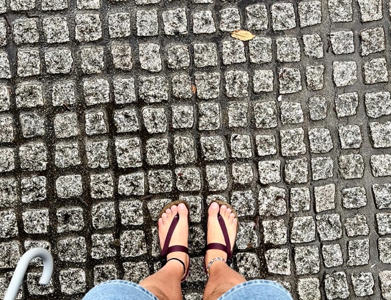
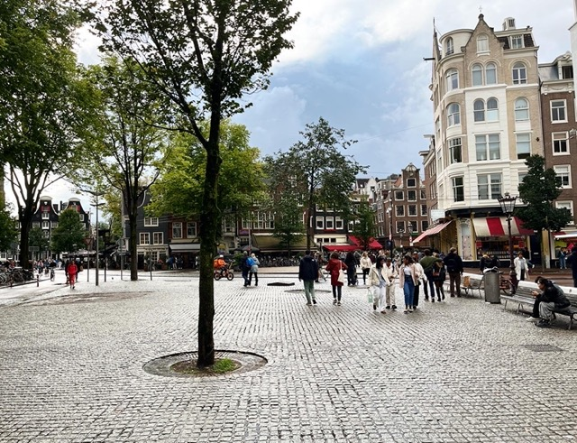

Soulmate Sandals in Amsterdam
Posted on
Hello with my new sandals made by Soulmate Sandals in Istanbul. This is my first huarache-style sandals and they are a bit controversial within the family but I am getting used to them in terms of liking the looks. It is more comfortable compared to my Exodus Sandals as there is a layer that absorb the rain and sweat, so it doesn’t slip. But I miss the ground feel of my good old sandals as this pair is brand new. Now there are options for my daily fashion!
 